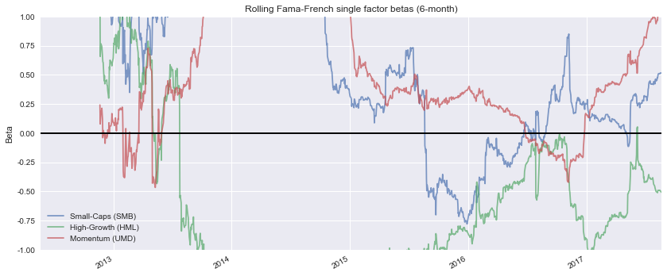

Fama French Benchmark Example
In this notebook, we use pyfolio to analyze the returns of a single stock using the canonical Fama-French factors as the benchmark.
We plot the rolling betas to the Fama-French factors, and run the Bayesian tear sheet for an out-of-sample period of two months.
import sys
sys.path.append('/Users/george/Desktop/pyfolio/')
sys.path
['',
'/Users/george/anaconda/lib/python36.zip',
'/Users/george/anaconda/lib/python3.6',
'/Users/george/anaconda/lib/python3.6/lib-dynload',
'/Users/george/anaconda/lib/python3.6/site-packages',
'/Users/george/anaconda/lib/python3.6/site-packages/Sphinx-1.5.6-py3.6.egg',
'/Users/george/anaconda/lib/python3.6/site-packages/aeosa',
'/Users/george/anaconda/lib/python3.6/site-packages/setuptools-27.2.0-py3.6.egg',
'/Users/george/anaconda/lib/python3.6/site-packages/IPython/extensions',
'/Users/george/.ipython',
'/Users/george/Desktop/pyfolio/']
import pyfolio as pf
import matplotlib.pyplot as plt
%matplotlib inline
# silence warnings
import warnings
warnings.filterwarnings('ignore')
# Get the single stock returns
stock_rets = pf.utils.get_symbol_rets('FB')
# With just the stock returns, we can plot the rolling betas to the Fama-French factors.
# No need to actually compute the rolling betas; pyfolio does that for us!
fig, ax = plt.subplots(figsize=[14, 6])
pf.plotting.plot_rolling_fama_french(stock_rets, ax=ax)
<matplotlib.axes._subplots.AxesSubplot at 0x116d99eb8>

# However, for the bayesian tear sheet, we will actually need the rolling betas,
# so use pyfolio to get them
rolling_beta = pf.timeseries.rolling_fama_french(stock_rets)
# pf.timeseries.rolling_beta defaults to a 6-month trailing window.
# Thus, the first 6 months' data will be NaNs, which we must drop
rolling_beta.dropna(inplace=True)
rolling_beta.head()
| SMB | HML | Mom | |
|---|---|---|---|
| Date | |||
| 2012-11-20 00:00:00+00:00 | 1.064788 | 1.283250 | 0.242012 |
| 2012-11-21 00:00:00+00:00 | 1.528191 | 0.658291 | 0.078740 |
| 2012-11-23 00:00:00+00:00 | 1.232070 | 0.767785 | 0.166490 |
| 2012-11-26 00:00:00+00:00 | 1.366909 | 0.742015 | 0.214160 |
| 2012-11-27 00:00:00+00:00 | 1.372172 | 0.700392 | 0.159386 |
# Suppose the last 2 months were our out-of-sample period
out_of_sample = stock_rets.index[-60]
# Use pyfolio to run the bayesian tear sheet.
# The bayesian tear sheet's back end makes heavy use of pymc3, so there will be
# a lot of graphical output before the actual tear sheet
pf.tears.create_bayesian_tear_sheet(stock_rets, live_start_date=out_of_sample, benchmark_rets=rolling_beta)
Running T model
Optimization terminated successfully.
Current function value: -3113.664255
Iterations: 3
Function evaluations: 117
100%|██████████| 2500/2500 [02:53<00:00, 14.39it/s]
100%|██████████| 2000/2000 [00:01<00:00, 1328.55it/s]
Finished T model (required 238.11 seconds).
Running BEST model
64%|██████▍ | 1598/2500 [02:30<01:51, 8.09it/s]